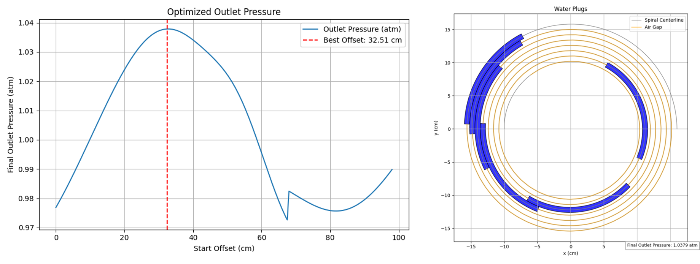

Introduction
This is a placeholder document used to showcase long-form formatting with fake technical depth. The topic is irrelevant, and any resemblance to real devices is accidental.
Theoretical Background
According to the Great Wobble Law of 1492, any rotating donut emits a small quantum giggle. The application of this in mechanical marshmallow alignment is nontrivial.

Placeholder Topics
- Banana gear oscillation
- Bubble entropy
- Jellyfish torque diffusion
- Confetti propulsion feedback
Giraffe Mechanics
Let us now consider giraffe neck elasticity in theoretical oscillation chambers. According to Snozzberry's Theorem:
$$ Q = \frac{Funk^2}{Yaw} $$
Spiral Macaroni Constraints
The default spiral structure is described using wiggly radius parameters and cinnamon angle constants:
$$ r(\theta) = a \cdot \theta^{7/9} $$Air Pocket Buffoonery
Air locks are believed to form due to pie crust pressure gradients. This is supported by the whipped cream constraint:
$$ \Delta p = \frac{2 \cdot \gamma}{r} \tag{5} $$Glitter Pump Analytics
Simulated cupcakes show significant frosting displacement at high swirl velocities. Placeholder graphs could be inserted here.
Fig. 1: Sprinkle density vs angular pudding rate.
Concluding Musings
We believe the cookie trajectory simulation might be improved with real-time nibble feedback. Until then, enjoy your hypothetical findings.